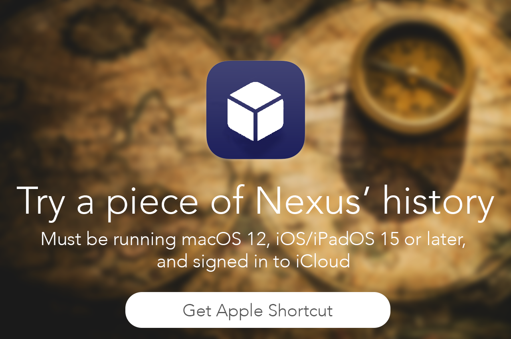

<html>
  <body style="background-color:#FFFFF;">
    </html>
<style>
    body {
        width: 35em;
        margin: 0 auto;
        background-color: rgb(22,44, 68);
        font-family: Tahoma, Verdana, Arial, sans-serif;
    }
</style>

<h1><span style="color: #ffffff;">Celebrating 5 years of Nexus</span></h1>
<p><span style="color: #ffffff;">This page is themed like legacy Nexus pages used to be themed!</span></p>

<h3><span style="color: #ffffff;">Check out some versions of the Nexus Apple Shortcut below (including the original GameTime shortcut from 2020 when Nexus first started!).</span></h3>
<h1><span style="color: #ffffff;">&nbsp;</span></h1>

<a href="https://www.icloud.com/shortcuts/f64bc8b9a2e148e7940ae28c618a357f"><h3><span style="color: #ffffff;">Last version of the Nexus Apple Shortcut (Series 2 H6, built on Bump)</span></h3></a>
<a href="https://www.icloud.com/shortcuts/7e439df20685466395977a2014583679"><h3><span style="color: #ffffff;">Nexus NewFramework 1.0 (the starts of a new Nexus codebase)</span></h3></a>
<a href="https://www.icloud.com/shortcuts/060555b4b7ab4c41845dff532b0598bb"><h3><span style="color: #ffffff;">Nexus Legacy 1803 (Built on GameTime framework)</span></h3></a>
<a href="https://www.icloud.com/shortcuts/3d18f888a0734dc6ad55ed278db12c1b"><h3><span style="color: #ffffff;">GameTime from May 4th, 2020</span></h3></a>


